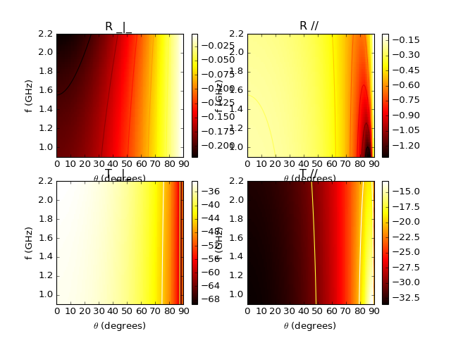

pylayers.antprop.slab.SlabDB.add¶
-
SlabDB.add(name, lmatname, lthick, color='black')[source]¶ add a slab from its properties
Parameters: name : string
lmatname : list of mat name
lthick : list ot float
list of layer thickness in meters
Examples
Examples from the paper:
“Reflection and Transmission Properties of Building Materials in D-Band for Modeling Future mm-Wave Communication Systems ” Martin Jacob and Thomas Kurner and Robert Geise and Radoslaw Piesiewicz EUCAP 2010
>>> from pylayers.antprop.slab import * >>> import numpy as np >>> import matplotlib.pylab as plt >>> sl = SlabDB(filemat='matDB.ini',fileslab='slabDB.ini') >>> sl.mat.add(name='ConcreteJc',cval=3.5,alpha_cmm1=1.9,fGHz=120,typ='THz') >>> sl.mat.add(name='GlassJc',cval=2.55,alpha_cmm1=2.4,fGHz=120,typ='THz') >>> sl.add('ConcreteJc',['ConcreteJc'],[0.049]) >>> sl.add('DoubleGlass',['GlassJc','AIR','GlassJc'],[0.0029,0.0102,0.0029]) >>> theta = np.linspace(20,60,100)*np.pi/180 >>> sl['ConcreteJc'].eval(120,theta) >>> f,a=sl['ConcreteJc'].plotwrt(var='a',typ=['l20']) >>> fig = plt.figure() >>> sl['DoubleGlass'].eval(120,theta) >>> f,a = sl['DoubleGlass'].plotwrt(var='a',typ=['l20']) >>> freq = np.linspace(110,135,50) >>> fig = plt.figure() >>> sl['DoubleGlass'].eval(freq,theta) >>> sl['DoubleGlass'].pcolor(dB=True)Exemple from paper “[Kiani2007] Glass Characterization for Designing Frequency Selective Surfaces to Improve Transmission through Energy saving glass windows Kiani 2007” The surface impedance is
 , the thicknesss is
, the thicknesss is 
Pilkington Spectrum OnLine applet
Design of Energy Saving Windows with high Transmission at 900MHz and 1800 MHz
\sigma = \frac{1}{Rd} = 2.5 10^{6} S/m
>>> from pylayers.antprop.slab import * >>> import numpy as np >>> import matplotlib.pylab as plt >>> sl = SlabDB(filemat='matDB.ini',fileslab='slabDB.ini') >>> sl.mat.add(name='CoatingPilkington',cval=1,sigma=2.5e6,typ='epsr') >>> sl.mat.add(name='GlassPilkington',cval = 6.9,sigma = 5e-4,typ='epsr') >>> sl.add('Optitherm382',['CoatingPilkington','GlassPilkington'],[100e-9,0.00382]) >>> fGHz = np.linspace(0.9,2.2,50) >>> theta = np.linspace(0,np.pi/2,100) >>> sl['Optitherm382'].eval(fGHz,theta) >>> sl['Optitherm382'].pcolor(dB=True)(Source code, png, hires.png, pdf)



{kind=link}
{kind=link}
{kind=link}
{kind=link}
{kind=link}
{kind=link}
{kind=link}
{kind=link}
{kind=link}
{kind=link}